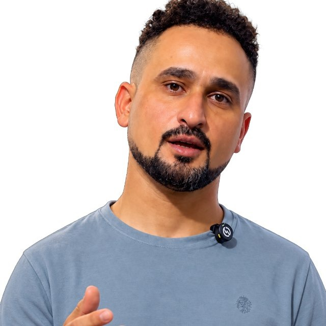

فريق المنصة
الفريق الذي يعمل على المنصة، والأطباء والداعمون الذين وقفوا مع الطلاب.
فريق المنصة

- تحسين سليم السعيديمنسّق المحاضرات
شكر وتقدير
لأطباء دعموا الطلاب بالصور الشعاعية، وكانوا عوناً لهم بعلمهم وتشجيعهم.
- د. أكرم رسول الغالبي
- د. أحمد علي صكبان
- د. سمية عبد الحسن
- د. علي فاضل الطائي
- د. علي محمد سعدونطب الأطفال
- د. علي كاظم الجهلاوي
- د. ناجي عبد الله الركابيجراحة العظام والمفاصل
شكر خاص
- منتظر جعفرمصوّر شعاعي
- الصيدلاني د. رائد عبد صالحداعم المنصة
الإشراف العلمي
- د. ساجدة كاظم محمدالأشعة الملونة للرحم (HSG)
مبادرة طلابية · قسم تقنيات الأشعة — المرحلة الثانية